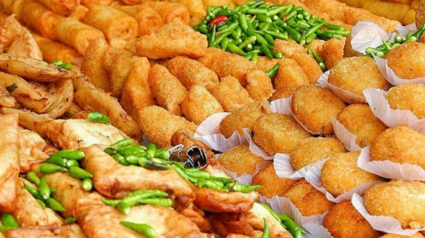
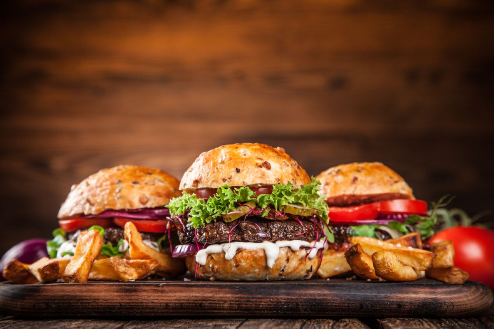
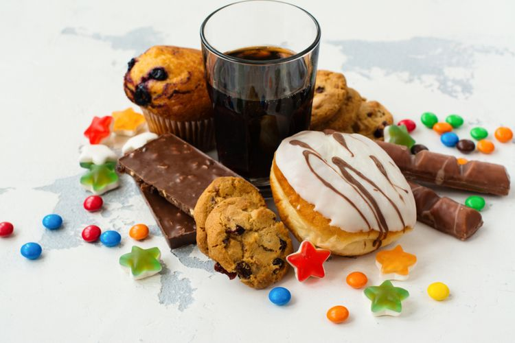
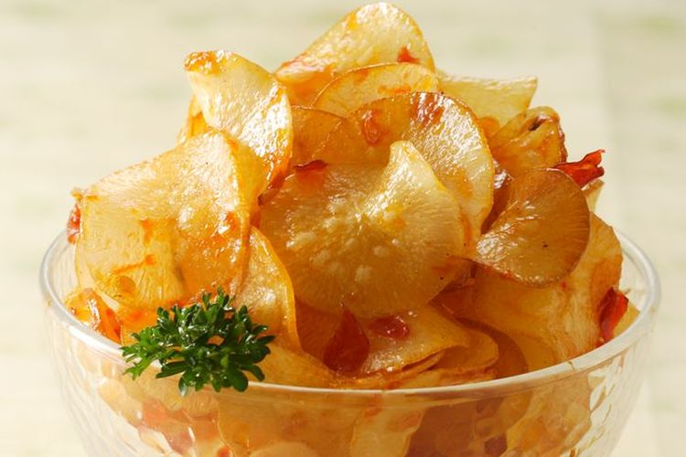

Beberapa Jenis Junk Food
- Gorengan
- Kentang Goreng
- Burger
- Makanan dan Minuman Manis
- Keripik
Gorengan memiliki kandungan kalori, lemak, dan minyak yang sangat tinggi. Jadi, bila dikonsumsi terlalu sering, mampu memicu penyakit kanker.
Junk food ini sudah ada semenjak ratusan tahun kemudian. Meski begitu, kuliner yang satu ini tidak sehat jika dikonsumsi terlalu sering. Hal ini karena kentang goreng yang digoreng dengan minyak sayur akan mengandung lemak tidak jenuh yang relatif poly. Lemak tidak jenuh ini akan menghasilkan radikal bebas kanker pada dalam tubuh. Terlebih lagi, kentang goreng sebab cenderung mengandung bahan kimia yang menyebabkan kanker. Jadi, jangan terlalu sering mengonsumsi kentang goreng.

Junk food yang terkenal pada Indonesia yang pertama adalah burger. Makanan ini bisa dibilang mempunyai nilai gizi yang sangat sedikit. Oleh karena itu, sangat tidak dianjurkan untuk mengonsumsi makanan ini terlalu sering.
Makanan dan minuman manis mengandung banyak kalori yang bisa menyebabkan seseorang kelebihan berat badan hingga mengalami obesitas, dimana obesitas mengakibatkan berbagai masalah kesehatan. Selain tinggi gula, produk makanan dan minuman manis tidak banyak mengandung nutrisi yang bermanfaat bagi tubuh.
Kandungan lemak yang cukup tinggi dalam keripik jika terus dikonsumsi berlebihan bisa meningkatkan risiko penumpukan lemak dalam pembuluh darah yang mengancam kesehatan.
